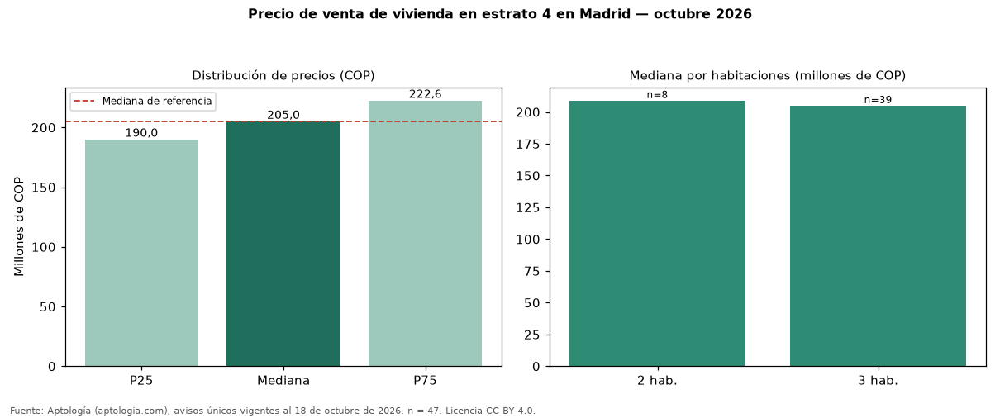

Precio de venta de vivienda en estrato 4 en Madrid — octubre 2026
Con 47 avisos únicos, el precio mediano de vivienda en estrato 4 en venta en Madrid es COP 205 millones. Es prácticamente la misma mediana de toda la oferta de venta en Madrid (COP 205 millones). Por metro cuadrado, la mediana es COP 3.762.712/m² (+0 % frente a COP 3.744.681/m²), puesto 6 de 7 ciudades comparables. Por habitaciones: 2 habitaciones, COP 209 millones (n = 8); 3 habitaciones, COP 205 millones (n = 39). El área mediana es 56 m² (referencia: 56 m²). El 4 % de los avisos tiene al menos un parqueadero. La antigüedad mediana declarada es de 5 años. Datos abiertos CC BY 4.0 de Aptología; fuente y búsqueda de inmuebles: https://www.aptologia.com/venta/madrid. Archivos: PDF de 2 páginas, CSV con las cifras y gráfica PNG.

| Avisos únicos | 47 |
|---|---|
| Percentil 25 | COP 190.000.000 |
| Mediana | COP 205.000.000 |
| Percentil 75 | COP 222.550.000 |
| Mediana por m² | COP 3.762.711 |
Fuente: avisos vigentes de portales inmobiliarios recopilados por Aptología, deduplicados (mínimo 30 avisos únicos por celda). Precios pedidos, no cerrados. Fecha: 2026-10-18.